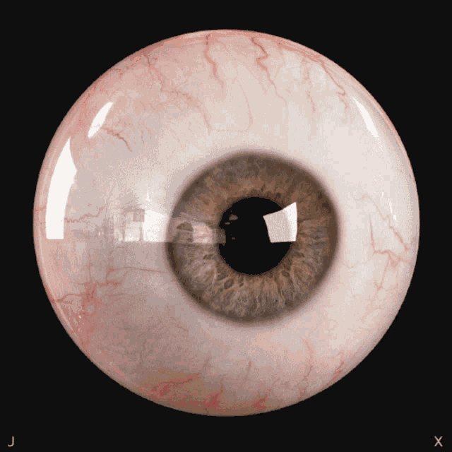

Storytelling/Cultural/Dream/Connection
THROUGH THE LENS

Recording/Diversity/Memory
"'World in My Eyes' invites viewers to explore the world through a shifting lens of perception, where
culture, technology, and time collide. It examines how traditions evolve, emotions intertwine with memory, and
global diversity is reflected through both a personal and collective journey."
Brooklyn impression
Life in NewYork
The Dreamland
Tastes of Wonder
Immerse in Cultural Treasures
""The real voyage of discovery consists not in seeking new landscapes, but in having new eyes." –"
–
Marcel Proust
Visit an inspirational web design page!